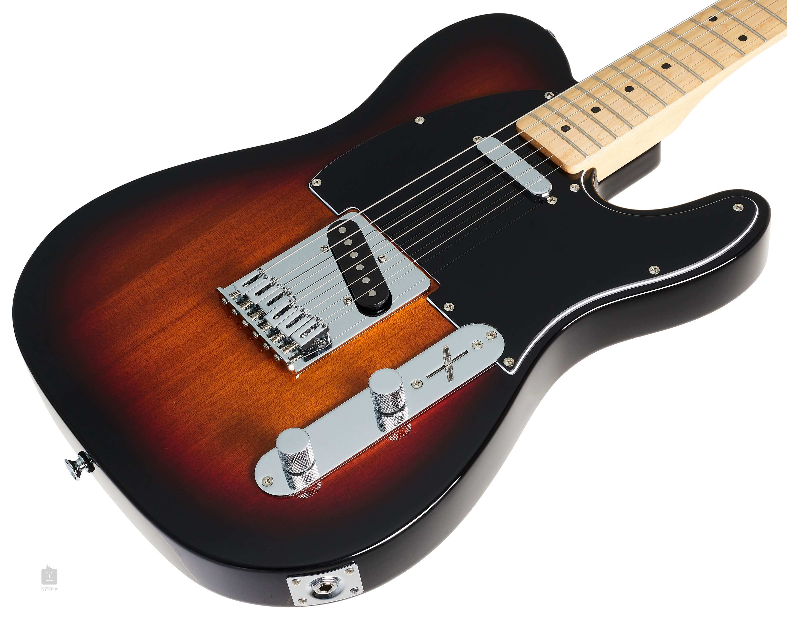
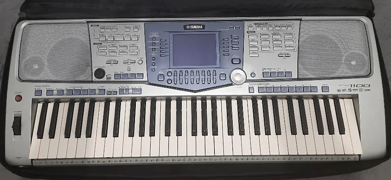

Desde pequeño mis padres me enseñaron la belleza de interpretar canciones, ellos integraron elencos de música en la UNSA cuando eran estudiantes. Siempre viví cerca de ese ambiente musical.
Junto con mi gusto por escuchar música, vinieron las ganas de interpretar las canciones de mis artistas favoritos. Aprendí primero a tocar el piano y luego la guitarra. Ahora cuando tengo tiempo practico nuevas canciones, populares, además de temas más complicados en guitarra eléctrica y obras para piano.
Sé tocar guitarra, piano y cantar, con voz de barítono. Tengo más básicos conocimientos de violín, saxofón y charango.
Actualmente cuento con una guitarra eléctrica bastante simple, Squier Telecaster.
También empleo un teclado Yamaha PSR-1100, con ya bastante recorrido. Fue con ese empecé a presentarme en vivo tocando en grupos.
Compositores que me gusta interpretar...